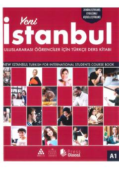

YİChet elliklar uchun turk tilini boshlang'ich A1 darajasida o'rgatuvchi zamonaviy darslik.
Ushbu darslik chet ellik talabalar va kattalar uchun turk tilini boshlang'ich A1 darajasida o'rgatish maqsadida tayyorlangan keng qamrovli o'quv qo'llanmasidir. Kitobda muloqotga yo'naltirilgan yondashuv asosida tinglash, o'qish, yozish va gapirish kabi to'rt asosiy til ko'nikmasini rivojlantiruvchi mashqlar taqdim etilgan.